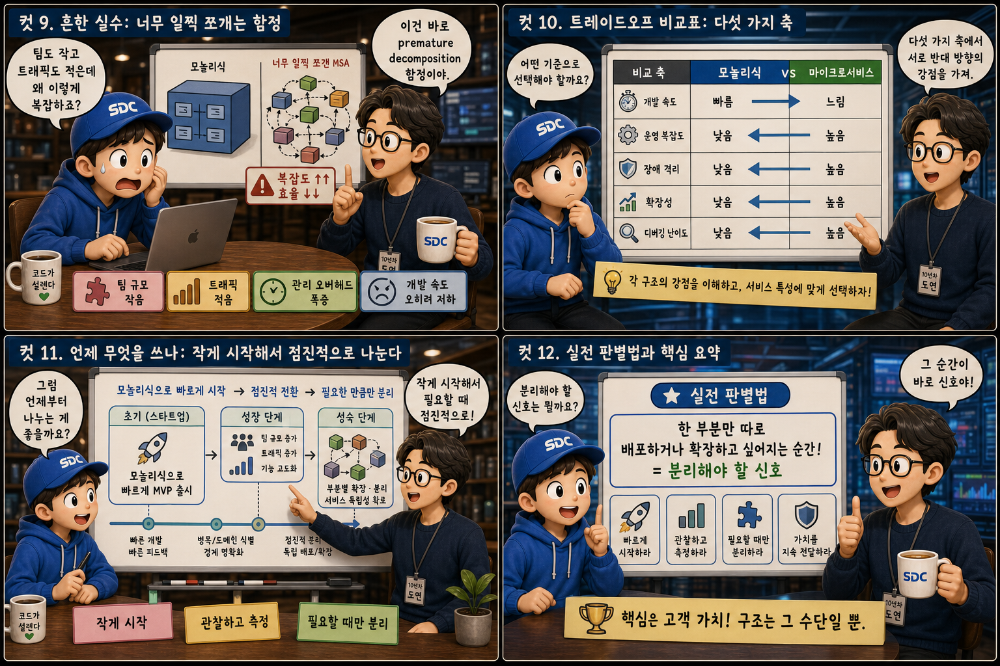

웅장한 백화점 한 채와 작은 전문점들이 모인 상가 마을에 비유해 두 아키텍처의 갈림길을 12컷으로 풀어봅니다.
MonolithvsMicroservices
웹 서비스를 설계할 때 가장 먼저 마주치는 구조적 질문이 있습니다. 기능을 하나로 뭉쳐 지을 것인가, 여러 조각으로 나눠 지을 것인가. 같은 기능이라도 하나의 큰 건물로 지을 수도 있고, 작은 가게들이 모인 마을로 지을 수도 있습니다. 입구가 단 하나인 웅장한 백화점과 가게마다 별도의 출입문이 있는 상가 거리 — 이 선택은 이후의 개발 속도, 배포 방식, 심지어 팀 구조까지 모두 좌우합니다. 지금부터 모놀리식과 마이크로서비스, 두 건축 방식을 하나씩 뜯어봅니다.
PART 1 / 3 — 두 건축 방식의 발견 (컷 01–04)
fourcut-01 — 컷 01 ~ 04
컷 01
이 서비스는 한 채로 지을까, 여러 채로 나눌까
같은 기능을 만들어도 “하나의 큰 건물”로 지을 수도, “작은 가게들이 모인 마을”로 지을 수도 있다. 이 선택이 아키텍처의 첫 갈림길이다.
화면 왼쪽에는 벽돌 레드 외벽에 “MONOLITH”라는 큰 간판 하나가 걸린 웅장한 백화점이, 오른쪽에는 청록색 지붕의 작은 전문점들이 서로 다른 간판을 달고 늘어선 상가 마을이 서 있습니다. 백화점 앞에는 입구가 단 하나, 마을에는 가게마다 별도의 출입문이 있습니다. 웹 서비스를 설계할 때 가장 먼저 마주치는 질문이 바로 이것입니다 — 기능을 하나로 뭉쳐 지을 것인가, 여러 조각으로 나눠 지을 것인가. 이 선택은 이후의 개발 속도, 배포 방식, 팀 구조까지 모두 좌우합니다.
컷 02
정의부터: 하나의 건물과 여러 채의 마을
모놀리식은 모든 기능이 하나의 배포 단위로 묶인 애플리케이션이고, 마이크로서비스는 독립적으로 배포되는 작은 서비스들의 집합이다.
모놀리식(monolith)은 회원, 주문, 결제 같은 기능들이 하나의 코드베이스와 하나의 배포 단위로 묶여 함께 실행되는 애플리케이션입니다. 건물 단면도를 보면 네 개의 방이 벽 없이 하나의 큰 홀 안에 이어져 있고, “하나의 배포”라고 적힌 트럭 한 대가 건물 전체에 통째로 도착합니다. 반면 마이크로서비스(microservices)는 각 기능이 독립된 서비스로 분리되어 각자 따로 배포되고 실행되는 구조로, 트럭 네 대가 각각 다른 가게 앞에 따로따로 도착합니다. 핵심 차이는 기능이 나뉘어 있느냐가 아니라, 그 기능들이 각각 독립적으로 빌드되고 배포될 수 있느냐입니다. single deployable unit / independently deployable services
컷 03
나란히 비교: 코드베이스와 배포의 개수
모놀리식은 하나의 코드베이스와 하나의 배포, 마이크로서비스는 여러 개의 코드베이스와 여러 개의 독립 배포로 이루어진다.
모놀리식 구조에서는 모든 기능이 하나의 코드베이스에 들어 있고, 배포도 애플리케이션 전체를 한 번에 빌드해서 내보내는 방식입니다 — 컨베이어 벨트 하나가 건물 전체를 실어 나르는 1 repo, 1 deploy. 마이크로서비스 구조에서는 서비스마다 별도의 코드베이스와 별도의 배포 파이프라인을 가집니다 — 상자마다 각자의 미니 컨베이어 벨트가 연결된 N repos, N deploys. 그래서 마이크로서비스에서는 결제 서비스만 고쳐서 배포해도 회원이나 주문 서비스는 전혀 건드릴 필요가 없습니다.
컷 04
핵심 원칙: 서비스는 자신의 데이터를 소유한다
마이크로서비스의 핵심 원칙은 각 서비스가 자신의 데이터와 배포 주기를 온전히 소유한다는 것이다.
MONOLITH · shared data
하나의 데이터베이스를 모든 기능이 공유한다
MICROSERVICES · own data
서비스 하나가 자신의 데이터와 배포 주기를 온전히 소유한다
core principle
마이크로서비스 아키텍처를 마이크로서비스답게 만드는 핵심 원칙은 각 서비스가 자신만의 창고(데이터베이스)를 따로 갖는다는 점입니다. 다른 서비스는 그 데이터에 직접 접근할 수 없고 오직 API를 통해서만 접근합니다. 이 원칙이 지켜지지 않고 여러 서비스가 하나의 데이터베이스를 공유한다면, 겉모습은 마이크로서비스처럼 나뉘어 있어도 실제로는 배포만 나뉜 모놀리식에 가깝습니다.
PART 2 / 3 — 강점과 동작 원리 (컷 05–08)
fourcut-02 — 컷 05 ~ 08
컷 05
장단점 카탈로그: 각자의 강점
모놀리식은 초기 개발이 단순하고 트랜잭션 처리가 쉬우며, 마이크로서비스는 독립 확장과 독립 배포, 팀별 소유권이 강점이다.
모놀리식은 하나의 코드베이스 안에서 함수를 직접 호출하기 때문에 초기 개발이 빠르고, 하나의 데이터베이스 트랜잭션으로 여러 작업을 묶어 처리하기가 쉽습니다. 배포와 디버깅도 한곳에서 이루어집니다. 마이크로서비스는 트래픽이 몰리는 서비스만 골라서 확장할 수 있고, 팀마다 자기 서비스를 독립적으로 배포하며 소유권을 명확히 가질 수 있습니다 — 한 가게만 커지고, 트럭 한 대가 가게 하나에만 도착하고, 가게마다 다른 유니폼의 팀이 서 있는 모습 그대로입니다. 두 방식 모두 나름의 합리적인 강점을 갖고 있어 어느 쪽이 절대적으로 우월하다고 말할 수 없습니다.
컷 06
동작 원리: 하나의 요청이 여러 가게를 거친다
마이크로서비스 구조에서는 사용자 요청 하나가 여러 서비스 간 API 호출을 거치며 처리되어, 네트워크 홉이 늘어난다.
사용자 요청→주문 서비스→ ①회원 서비스→ ②결제 서비스→ ③배송 서비스→ ④응답
사용자 요청→모놀리스 (in-process call 한 번)→응답
microservices: network hops vs monolith: in-process call
마이크로서비스 구조에서는 사용자의 요청 하나가 여러 서비스를 순서대로 거치며 처리됩니다. 예를 들어 주문 요청 하나가 회원 서비스, 결제 서비스, 배송 서비스에 각각 API 호출을 보내고 응답을 받아야 완료됩니다. 이 과정에서 각 호출은 네트워크를 거치는 홉(hop)이 되므로, 같은 작업이라도 벽 없는 홀 안을 짧은 화살표 하나로 가로지르는 모놀리식의 함수 호출보다 지연 시간과 실패 가능성이 늘어납니다.
컷 07
헷갈리는 경계: 나누기만 하면 마이크로서비스일까
폴더를 여러 개로 나눈다고 마이크로서비스가 되는 것은 아니다. 분산 트랜잭션과 서비스 디스커버리 같은 숨겨진 복잡도가 함께 따라온다.
겉으로는 청록색 가게 세 채로 나뉘어 있지만, 지붕 아래 보이지 않는 배관이 하나의 지하 창고로 연결되어 있다면 어떨까요. 코드를 여러 폴더나 여러 프로세스로 나누기만 한다고 진짜 마이크로서비스가 되는 것은 아닙니다. 서비스들이 결국 하나의 데이터베이스를 공유하고 있다면 배포만 나뉜 모놀리식일 뿐입니다. 그리고 진짜 마이크로서비스로 나아가면 새로운 복잡도가 반드시 따라옵니다 — 여러 서비스에 걸친 작업을 하나처럼 묶기 어려운 분산 트랜잭션 문제, 그리고 서비스가 서로의 위치와 상태를 찾아야 하는 서비스 디스커버리 문제가 대표적입니다. distributed transaction / service discovery
컷 08
코드로 보는 예시: 배포 스크립트의 차이
모놀리식은 하나의 배포 스크립트로 전체를 배포하고, 마이크로서비스는 서비스마다 독립된 배포 설정을 갖는다.
모놀리식은 보통 deploy.sh 같은 스크립트 하나로 애플리케이션 전체를 빌드하고 배포합니다. 마이크로서비스는 docker-compose.yml처럼 서비스마다 별도의 컨테이너 이미지와 포트, 환경 변수를 정의한 설정을 가지며, 각 서비스를 따로 빌드하고 따로 재배포할 수 있습니다. 이 차이 때문에 마이크로서비스에서는 결제 서비스에 버그가 생겨도 회원 서비스는 그대로 살아있는 채로 결제 서비스만 다시 배포할 수 있습니다.
PART 3 / 3 — 함정, 트레이드오프, 실전 가이드 (컷 09–12)

fourcut-03 — 컷 09 ~ 12
컷 09
흔한 실수: 너무 일찍 쪼개는 함정
팀 규모나 트래픽이 아직 작을 때 성급하게 마이크로서비스로 쪼개면 오히려 복잡도만 늘어나는 premature decomposition 함정에 빠진다.
⚠ premature decomposition
“우리 팀은 세 명인데 서비스는 열 개?” — 서비스가 늘어나면 그만큼 배포 파이프라인, 네트워크 통신, 모니터링해야 할 지점도 함께 늘어납니다. 정작 서비스를 운영할 인력은 부족한데 관리해야 할 조각만 많아지는 역설이 생깁니다.
✓ scale when the team and traffic grow
마이크로서비스가 주는 이점은 그 복잡도를 감당할 만큼 팀과 트래픽 규모가 커졌을 때 비로소 힘을 발휘합니다. 팀 규모와 트래픽이 작을 때는 나눌수록 관리 부담만 커집니다.
책상 두세 개뿐인 작은 스타트업 사무실 뒤로, 붉은 실선처럼 호출이 뒤엉킨 미니 가게 열 채가 빽빽하게 늘어선 마을을 상상해 보세요. 사무실과 마을 사이의 크게 어긋난 비율 — 그것이 성급한 분해가 만드는 풍경입니다.
컷 10
트레이드오프 비교표: 다섯 가지 축
개발 속도, 운영 복잡도, 장애 격리, 확장성, 디버깅 난이도 다섯 가지 축에서 두 구조는 서로 반대 방향의 강점을 가진다.
same features, opposite strengths
비교 축
모놀리식 (한 채의 건물)
마이크로서비스 (여러 채의 마을)
개발 속도
초기 개발이 빠름 (달리기)
상대적으로 느림 (걷기)
운영 복잡도
단순함 (톱니 하나)
높음 (여러 톱니가 맞물림)
장애 격리
한 부분의 장애가 건물 전체를 흔듦
가게 한 채만 흔들리고 나머지는 유지
확장성
건물 전체를 통째로 키워야 함
필요한 가게 한 채만 키울 수 있음
디버깅 난이도
손전등 하나로 방 전체를 비춤
여러 가게를 흩어 비춰야 해 추적이 어려움
모놀리식은 개발 속도가 빠르고 운영이 단순하지만, 한 부분의 장애가 건물 전체를 흔들 수 있고 확장할 때도 전체를 통째로 키워야 합니다. 마이크로서비스는 장애를 서비스 단위로 격리할 수 있고 필요한 서비스만 골라 확장할 수 있지만, 운영 복잡도가 높아지고 문제가 어느 서비스에서 발생했는지 추적하는 디버깅 난이도도 함께 올라갑니다. 결국 어느 쪽을 택하든 이 다섯 축 중 무엇을 더 중요하게 여기는지에 대한 트레이드오프입니다.
컷 11
언제 무엇을 쓰나: 작게 시작해서 점진적으로 나눈다
스타트업 초기엔 모놀리식으로 빠르게 시작하고, 팀과 트래픽이 커지고 부분별 확장이 필요해질 때 마이크로서비스로 점진 전환하는 것이 현실적이다.
🏢 초기 — 모놀리식으로 빠르게
하나의 코드베이스로 제품을 빠르게 완성
시장에서 먼저 검증
도메인 경계를 코드 안에서 배워 나감
🏘 성장 이후 — 부분별로 하나씩 분리
여러 팀이 같은 코드베이스에서 부딪히기 시작할 때
특정 기능만 트래픽이 몰려 따로 확장해야 할 때
그 부분부터 하나씩 독립 서비스로 떼어냄
많은 실무 팀들은 처음부터 마이크로서비스로 시작하지 않고, 모놀리식으로 빠르게 제품을 만들어 시장에서 검증한 뒤 필요한 부분만 점진적으로 분리해 나갑니다. 벽돌 레드 건물 하나로 시작한 시간선이 성장통의 균열을 지나 서서히 청록 가게들로 갈라져 나오는 그림처럼요. 처음부터 완벽한 마이크로서비스를 설계하려 하기보다, 모놀리식에서 시작해 경계를 배워가며 나누는 편이 대부분의 팀에게 더 안전합니다.
컷 12
실전 판별법과 핵심 요약
한 부분만 따로 배포하거나 확장하고 싶어지는 순간이 바로 서비스를 분리해야 할 신호다.
모놀리식과 마이크로서비스 중 무엇이 옳은지는 정답이 정해져 있지 않습니다. 판단 기준은 지금 이 서비스 안에서 유독 한 부분만 트래픽이 몰리거나, 유독 한 팀만 독립적으로 빠르게 배포하고 싶어지는 순간이 왔는가입니다. 건물 안에서 결제 부분만 밝게 빛나며 “이 부분만 따로 빼고 싶다”는 말풍선이 붙는 순간 — 그 신호가 뚜렷해질 때 비로소 그 부분을 하나씩 떼어 독립된 청록 가게로 키워나가는 것이 마이크로서비스로 가는 가장 안전한 길입니다.
제어 단위 = 배포 단위각자 데이터를 소유해야 진짜 마이크로서비스분리는 네트워크 홉과 복잡도를 늘린다팀과 트래픽이 작을 땐 모놀리식이 유리premature decomposition을 경계하라분리 신호가 보일 때 하나씩 떼어내라
한 채의 건물, 여러 채의 마을
모놀리식은 하나의 건물 안에서 빠르고 단순하게 시작하는 힘을, 마이크로서비스는 가게마다 독립적으로 배포하고 확장하는 유연함을 줍니다. 정답은 정해져 있지 않습니다 — 모놀리식으로 시작해 경계를 배우고, 한 부분만 따로 배포하고 싶어지는 신호가 보일 때 하나씩 떼어내면 됩니다.